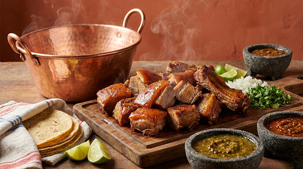
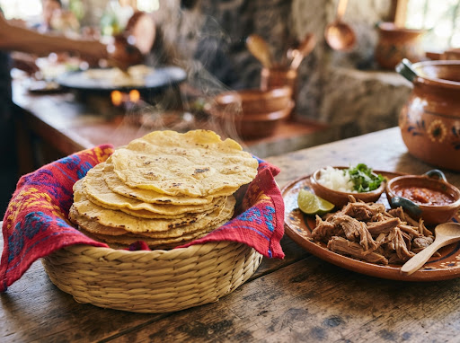
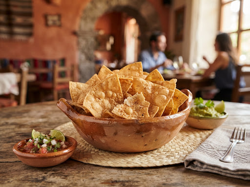
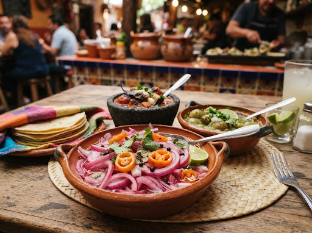
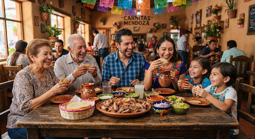
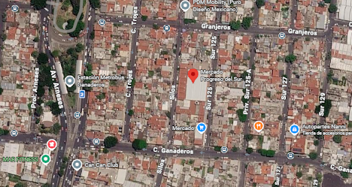

El Auténtico Sabor de Michoacán, Dorado a Fuego Lento desde 1988.
Tradición y auténtico sabor de Michoacán dorados a fuego lento en su punto exacto: carne tierna, corteza crujiente y la receta secreta de la familia Mendoza directo a tu mesa. Ahora en la CDMX.

Maciza con Cuerito Dorado
Doradas a fuego lento • Servidas al momento
Más de 35 Años de Tradición y Devoción al Fuego Lento
Seguimos con devoción la tradición de Don Jorge Mendoza, perfeccionando con paciencia la receta familiar originaria de Uruapan: el arte de dorar a fuego lento con la pasión que nos caracteriza y el calor de la atención. Hoy, tres generaciones después, el fuego nunca se apaga.
Desde 1988 deleitando a las familias más exigentes.
En doble tortilla calientita, cebolla morada y cilantro fresco.
Sin conservadores ni colorantes artificiales; pura sazón ancestral.
El Secreto de la Cocción Lenta
Nuestro método a fuego lento cocina la carne con paciencia inquebrantable, permitiendo que el exterior caramelice de forma crujiente mientras el centro permanece infinitamente suave.
Carne 100% Fresca de Primera Calidad
Seleccionamos rigurosamente pierna, costilla tierna, lomo y aldilla fresca cada mañana. Cero congelados, garantizando la textura fundente y el sabor auténtico de rancho.
Receta Familiar de Tres Generaciones
Una fórmula celosamente custodiada: el balance exacto de cítricos criollos, especias de montaña y tiempos de cocción lentos que van de 3 a 4 horas a fuego paciente.
El Arte y la Pasión en Cada Detalle
Una mirada íntima a nuestra cocina en Uruapan, las manos maestras y la alegría de compartir una de las joyas gastronómicas de México siguiendo la receta de Don Jorge Mendoza.
El Secreto del Dorado a Fuego Lento
Burbujeo pausado durante cuatro horas para impregnar los aromas de nuestra receta secreta.
Tacos recién taqueados

Tortillas calientitas al momento

Totopos de la Casa
Recién hechos, dorados y crujientes, el acompañamiento favorito de todos.

Salsas de la receta secreta y cebollas con habaneros en vinagre

Tradición que reúne familias
El pretexto perfecto para celebrar el domingo.
Lo que Dicen Quienes ya Encontraron su Lugar Favorito
Más de tres décadas construyendo lazos a través del sabor auténtico y el trato cordial.
“Las mejores carnitas de la ciudad sin duda alguna. La costilla y el cuerito tienen el dorado perfecto, nada grasosas y las salsas de molcajete son de otro mundo.”
Roberto Carranza
Cliente desde hace 12 años
“Pedimos el banquete para el cumpleaños de mi papá de 50 personas y el servicio fue impecable. Llegaron calientitas, con todo empacado perfecto. Todos los invitados quedaron fascinados.”
Mariana Villaseñor
Evento Familiar
“El sabor me transportó directamente a Uruapan, Michoacán. Se nota con claridad la receta de Don Jorge Mendoza y el cariño familiar en cada taco.”
Chef Javier Monroy
Crítico y Gastrónomo
Ven a Disfrutar el Auténtico Sabor Michoacano
Ambiente tradicional de mercado, servicio para comer en barra o para llevar con empaque térmico.
Dirección Principal
Mercado Progreso del Sur (Local 134) Minerva, CP 09810, Alcaldía Iztapalapa, Ciudad de México.
Local 134 • Pasillo tradicional de comidaDías y Horarios de Atención
Sábado y Domingo: 9:00 AM – 4:00 PM
(O hasta agotar existencias del día)
Servicio de fin de semana exclusivamente.
Teléfono Directo
+52 55 3658 7818
Atención directa, pedidos para llevar y encargos por kilo.
Comodidades
Comer en barra o mesas tradicionales de mercado, pedidos para llevar bien empacados, salsas y limones ilimitados, pago en efectivo y transferencias.
